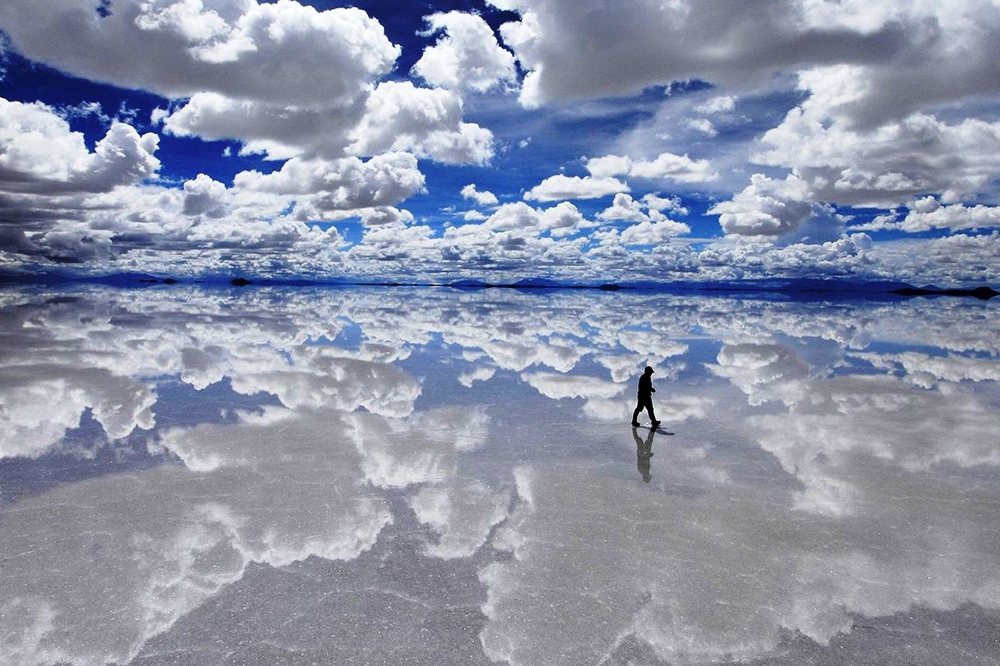

El Salar de Uyuni (Bolivia) es uno de los destinos más espectaculares de toda Sudamérica. Todas las guías, foros y publicaciones de turismo internacionales lo señalan como un imperdible, uno de estos lugares únicos que todos sus visitantes retienen en su memoria para siempre. Para facilitarte la visita, hemos recopilado en este artículo todo lo que necesitas saber en formato de preguntas frecuentes.
Caminar en medio de la nada. A veces sobre un suelo pálido e interminable, a veces sobre las nubes. El blanco infinito bajo mis pies solo se interrumpe cuando arremete contra el azul del cielo, en la lejanía de un horizonte inacabable y continuo. Entre tanta inmensidad, la soledad es absoluta y el silencio, total. Una gaviota pasa volando sobre mi cabeza para luego darme cuenta de que me hallo sobre una fina capa de agua que refleja todo alrededor. Camino sobre las nubes.
La historia geológica de este sitio lo ubica dos veces bajo el agua salobre: una hace 40 000 años, cubierto por el lago Minchín ?de unos 36 000 kilómetros cuadrados?, y la otra hace 12 000 años, cuando el derretimiento glaciar formó las aguas del lago Tauka. Tras miles de años, ambos cuerpos de agua se evaporaron debido a la falta de afluentes y al calor por la actividad volcánica, dejando el salar de Uyuni ?así como al de Coipasa y a los lagos Poopó y Uru Uru? como registro de su existencia.
¿Cuánto tiempo se necesita para visitar el Salar de Uyuni?
Antes de responder esta pregunta, hay que dejar claro que el Salar de Uyuni, propiamente, es el mayor desierto de sal de la Tierra. La ciudad de Uyuni (Bolivia) está justo al inicio de este magnífico lugar natural y desde allá podrías verlo en un solo día.
Dicho esto, cabe señalar que generalmente se habla del tour del Salar de Uyuni como un recorrido de entre dos y cuatro días, no solo por esta extensión blanca gigantesca, sino como una ruta que también incluye numerosos atractivos del altiplano boliviano, como espectaculares lagunas de diversos colores, formaciones rocosas y un entorno desértico único repleto de fauna autóctona.
¿Cuál es la mejor época para visitar el Salar? ¿Cómo es el clima?
Es difícil responder esa pregunta, lo dejaremos en un “depende”. Entre mayo y noviembre (estaciones frías) las lluvias son escasas o inexistentes. El Salar Ofrece entonces un aspecto parecido a un mar blanco, donde se pierde la perspectiva y ofrece muchas oportunidades de sacar divertidas fotografías jugando con los efectos ópticos que se producen. En esta época, de promedio, las temperaturas máximas de 18 °C y mínimas de 1’7 °C.
Entre enero y febrero (estaciones cálidas) es la temporada lluviosa en la zona. Pero eso no es necesariamente malo. Es probable que hayas visto fotografías del Salar convertido en un espejo gigantesco. Este fenómeno solo se da en esta época. Si te interesa verlo, te recomendamos ir a mediados de enero o fines de febrero, ya que podrás ver los reflejos con un riesgo de lluvia más bajo. En esta época, de promedio, las temperaturas máximas son de 16 °C y mínimas de -3 °C.